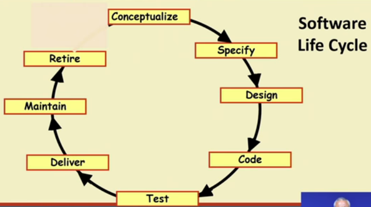

LifeCycle model

→ A software life cycle model (also known as process modek or SDLC) is adescriptive and diagrammatic model of software life cycle.
→ It identifies all the activities undertaken during product development
→ It establishes a precedence ordering among the different activities.
→ It divides lifecycle into phases and each phase consist of several activities. For ex: The design phase might consist of :
⇒ Structured analysis
⇒ Structured Design
⇒ Design review
→ A life cycle model defines entry and exit criteria for every phase. A phase is considered to be complete only when all its exit criteria are satisfied. A phase can start if its phase-entry critera have been satisfied.
~~~~~~~~~~~~~~~~~~~~~~~~~~~~~~~~~
Software life cycle (or Software process):
Its a series of identifiable stages that a software product undergoes during it's life time.
The stages are:
• Feasibility study
• Requirement analysis and specification
• Design
• Coding
• Testing
• Maintenance
~~~~~~~~~~~~~~~~~~~~~~~~~~~~~~~~~